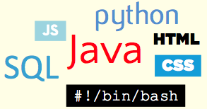

INFO
Address
330 Angelo Cifelli Drive,
Apt 437, Harrison, NJ
Gmail
abhaar@gmail.com
 LinkedIn
LinkedIn
http://www.linkedin.com/in/abhaar/
SKILLS
ABHAAR GUPTA
Education
Columbia UniversityNew York, NY
Master of Science in Electrical Engineering, GPA 3.73/4.00May 2015
National Institute of TechnologyKurukshetra, India
Bachelor of Technology in Electrical Engineering, GPA 8.2/10.0 May 2010
Projects
Columbia UniversityNew York, NY
Twitter Sentiment VisualizationSpring 2015
- Developed a Web Application that collects live feeds from Twitter on a user-selected topic, performs a sentiment analysis on them, and plots a heat map that is updated in real-time.
Big Data AnalyticsFall 2014
- Analyzed Consumer Complaint Database using Hadoop and other open-source tools to identify areas of improvement for financial institutions. http://abhaar.github.io/Consumer-Complaint-Analyses/
genSpace (Open Source, sponsored by NIH and NCI)Fall 2014
- Resolved account synchronization issues between genSpace (suite of plugins) and geWorkbench (host System)
DatabaseFall 2014
- Created a database modeling real world scenario of Indian Premier League (Sports League), using ORACLE Database.
Computer NetworksSpring 2014
- Developed Chat Server & Client Application using Java.
- Created a Reliable Routing Protocol for P2P file transfer using Java.
Professional Experience
Goldman SachsNew York, NY
Technology Associate, GSAMJan 2016 - Present
- Working to continuously improve the existing Order Management System
Trexquant Investment LPStamford, CT
Software DeveloperJul 2015 - Dec 2015
- Helped the company penetrate European markets by developing end-to-end trading system for medium frequency trading.
- Enhanced the existing systems to migrate away from flat files towards SQL database. Also, automated several tasks to reduce human involvement and errors.
Samsung Engineering India (P) Ltd.New Delhi, India
Electrical Design Engineer, Hydrocarbons DivisionJul 2010 – Dec 2013
Awards and Recognition
- Ranked 5th among 30 students at the Bloomberg Codecon contest organized by Bloomberg at Columbia University.
- Bronze Medal and Cash prize for creating ‘alphas’ in the Web-Sim Contest organized by World Quant
- Scholarship recipient from Sports Authority of India for being among the 100 best sportspersons of the state
Activities
- Volunteer at Community Teamworks, Goldman Sachs
- Represented State Basketball Team at National Open Basketball Championship in India.
- Captain of Basketball team at NIT
- Represented a 1000 plus strong student body as the Head of Student Council (President) in High School